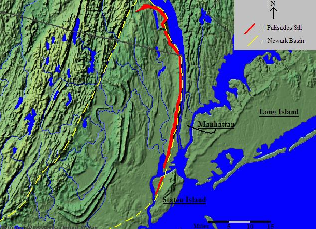
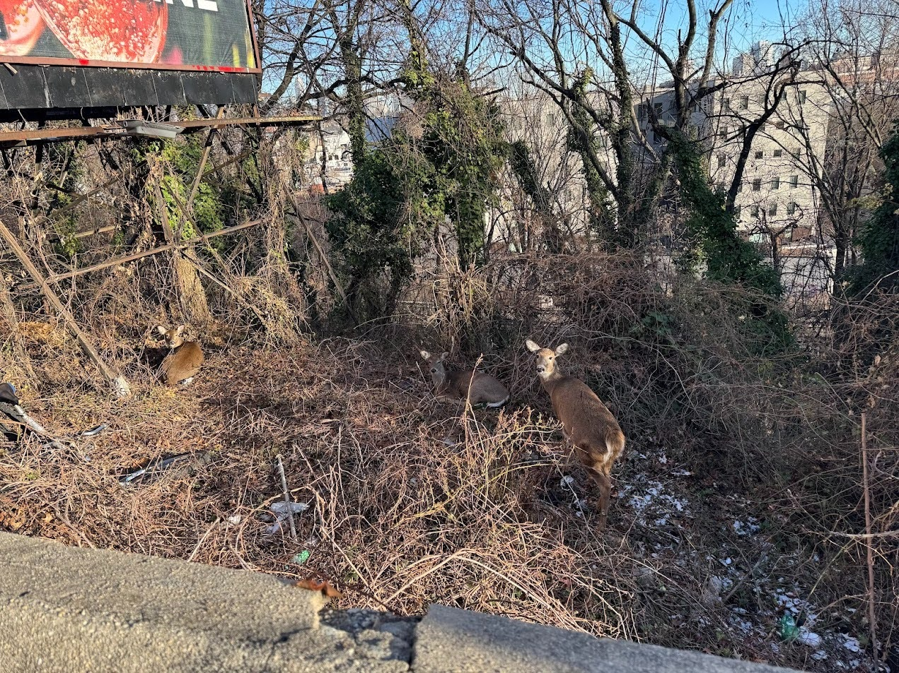
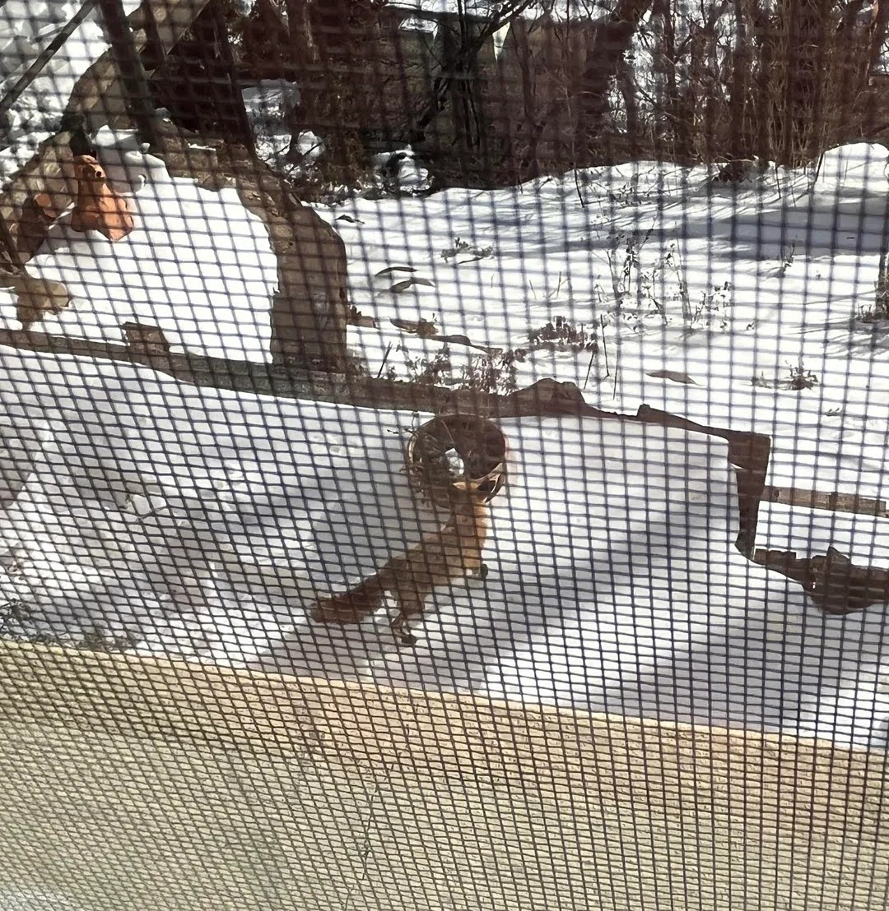
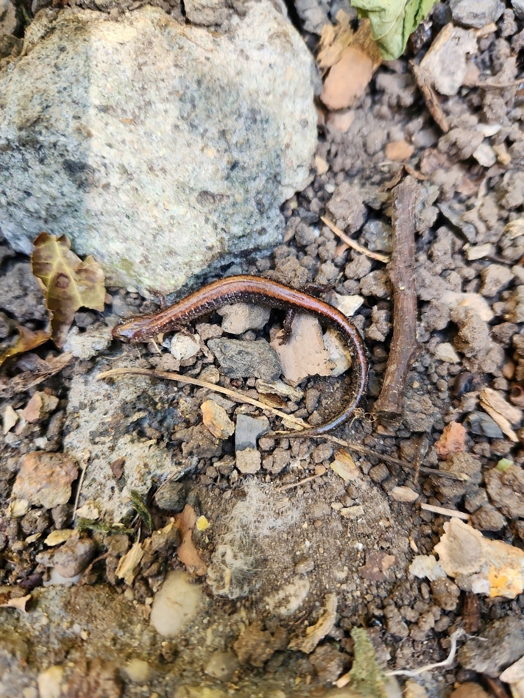

More than the Palisades Interstate Park. The 12-mile section of the cliffs contained in the Palisades Interstate Park is roughly in the middle of the entire ridgeline. The Palisades Sill spans more than 40 miles, from Staten Island to Haverstraw, New York.
400 acres across Hudson and Bergen Counties. The "Lower Palisades" area starts a half mile south of the George Washington Bridge and goes all the way to Jersey City. This is a vital wildlife corridor where very little natural area still exists.

Despite heavy urbanization, the Lower Palisades remain a vital wildlife corridor supporting a surprising diversity of species.

Deer below Riverview Park
December 2025

Fox in Union City
January 2026

Eastern Red-backed Salamander below Ogden's End
November 2024
This habitat is under threat. Learn about the challenges and how we plan to address them.
Issues & Solutions →